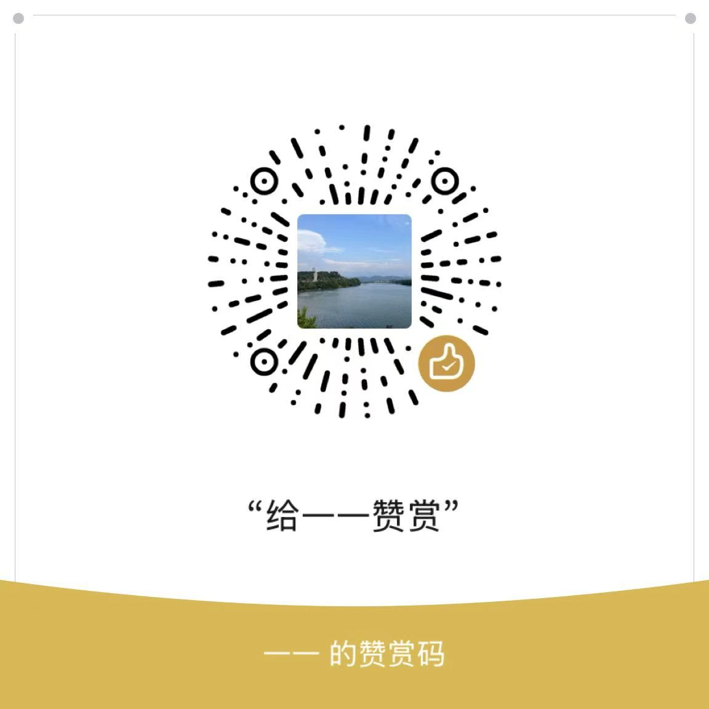

支持开发
垃圾账号清理器（X / 推特）· 完全免费，没有付费版
先说清楚：这里没有付费墙，没有会员，也没有任何功能需要解锁。 你付或不付，用起来完全一样。赞赏只是自愿的心意，用来补偿维护它花掉的时间。
海外 · Ko-fi
信用卡或 PayPal 付款，可选 3 / 5 / 10 美元，也可以自填金额。一次性赞赏，不是订阅。
国内 · 微信赞赏码

其他方式
反馈问题、提建议、报 bug，都请到 github.com/pexih/x-spam-blocker-legal/issues。 这比赞赏更有用——问题被修掉，所有人都会受益。
Support the project
X (Twitter) Spam Account Cleaner · Free, with no paid tier
To be clear: there is no paywall, no membership, and no feature locked behind a payment. Nothing changes whether you support it or not. Tips are voluntary and go towards the time spent maintaining the extension.
Ko-fi
Pay by card or PayPal. Suggested amounts are 3, 5 or 10 USD; you can enter your own. One-off tip, not a subscription.
WeChat (mainland China only)
The WeChat appreciation code shown here only works with a WeChat account registered in mainland China, so if you are outside China, please use Ko-fi instead.
Feedback
Bug reports and suggestions are more valuable than tips: please open an issue at github.com/pexih/x-spam-blocker-legal/issues.